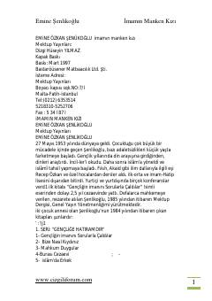

İMİmamın kızı olan Fatma'nın zorluklar ve isyan dolu hayattan mankenliğe uzanan ibretlik hikayesi.
Kitap, zorluklar içinde büyüyen ve hayat şartlarına isyan ederek mankenlik dünyasına yönelen bir imam kızının ibretlik ve dramatik hikayesini anlatmaktadır. Eser, madde ve maneviyat arasındaki çatışmaları, aile ilişkilerini ve dini değerleri sorgulayan olaylar zincirini ele alır. Yazar Emine Şenlikoğlu'nun kaleminden çıkan bu roman, okuyucuya hayatın ve tercihin sonuçları üzerine derin düşünceler sunar.